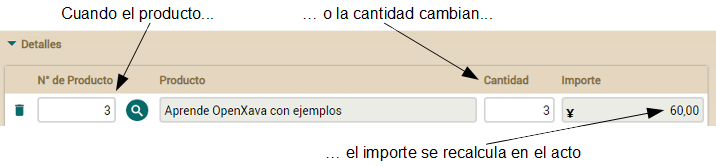

Lección 10: Propiedades calculadas
Curso: 1. Primeros pasos | 2. Modelo básico del dominio (1) | 3. Modelo básico del dominio (2) | 4. Refinar la interfaz de usuario | 5. Desarrollo ágil | 6. Herencia de superclases mapeadas | 7. Herencia de entidades | 8. Herencia de vistas | 9. Propiedades Java | 10. Propiedades Calculadas | 11. @DefaultValueCalculator en colecciones | 12. @Calculation y totales de colección | 13. @DefaultValueCalculator desde archivo | 14. Evolución del esquema manual | 15. Cálculo de valor por defecto multiusuario | 16. Sincronizar propiedades persistentes y calculadas | 17. Lógica desde la base de datos | 18. Validando con @EntityValidator | 19. Alternativas de validación | 20. Validación al borrar | 21. Anotación Bean Validation propia | 22. Llamada REST desde una validación | 23. Atributos en anotaciones | 24. Refinar el comportamiento predefinido | 25. Comportamiento y lógica de negocio | 26. Referencias y colecciones | A. Arquitectura y filosofía | B. Java Persistence API | C. Anotaciones | D. Pruebas automáticasTabla de contenidos

Si no te gustan los videos sigue las instrucciones a continuación.
Propiedades calculadas
Quizás la lógica de negocio más simple que puedes añadir a tu aplicación es una propiedad calculada. Las propiedades que has usado hasta ahora son persistentes, es decir, cada propiedad se almacena en una columna de una tabla de la base de datos. Una propiedad calculada es una propiedad que no almacena su valor en la base de datos, sino que se calcula cada vez que se accede a la propiedad. Observa la diferencia entre una propiedad persistente y una calculada:// Propiedad persistente
@Getter @Setter // Tiene getter y setter
int cantidad; // Tiene un campo, por tanto es persistente
// Propiedad calculada
public int getImporte() { // No tiene campo, ni setter, solo un getter
return cantidad * precio; // con un cálculo
}
Vamos a usar propiedades calculadas para añadir el elemento “económico” a nuestra aplicación facturacion. Porque, tenemos líneas de detalle, productos, cantidades. Pero, ¿qué pasa con el dinero?
Propiedad calculada simple
El primer paso será añadir una propiedad de importe a Detalle. Lo que queremos es que cuando el usuario elija un producto y teclee la cantidad el importe de la línea sea recalculado y mostrado al usuario:
Añadir esta funcionalidad a tu actual código es prácticamente añadir una propiedad calculada a Detalle. Simplemente añade el código siguiente a la clase Detalle:
@Money
@Depends("producto.numero, cantidad") // Cuando usuario cambie producto o cantidad
public BigDecimal getImporte() { // esta propiedad se recalculará y se redibujará
if (producto == null || producto.getPrecio() == null) return BigDecimal.ZERO;
return new BigDecimal(cantidad).multiply(producto.getPrecio());
}
Ahora has de añadir esta nueva propiedad a la lista de propiedades mostradas en la colección detalles de DocumentoComercial:
@ElementCollection
@ListProperties("producto.numero, producto.descripcion, cantidad, importe") // importe añadida
Collection<Detalle> detalles;